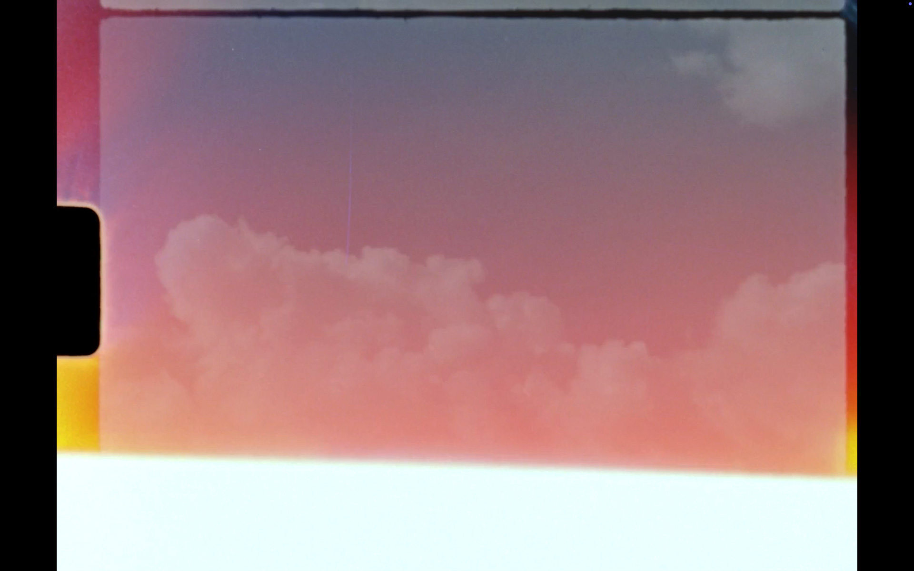

Dissipation Essays
2025
Film installation
Super 8mm film loop (6 meters, color, sound, 1'20"), two Braun Visacustic 2000 projectors, custom-made plinths, motorized rotating disc
Commissioned by EUROPALIA España for the exhibition :
'Iván Zulueta: Through the Looking Glass'
(10 Oct 2025 — 4 Jan 2026)
De Garage, Kunsthal Mechelen (Belgium)
Dissipation Essays is a film installation exploring cinema's ephemeral nature through material and phenomenological reflection, in dialogue with Iván Zulueta's work. Inspired by his films Aquarium (1975), Leo es Pardo (1976) and Arrebato (1979), the piece examines temporal perception and atmospheric motion through the visual study of dissipating clouds.
The installation features two concentrically placed Super8 projectors: the rear casts the shadow of the front, which projects within its own shadow, creating a double projection of image and shadow in the same optical field. A 10-meter Super8 loop runs through both projectors, containing time-lapse cloud footage and red frames triggering synchronized sound pulses.
A circular rotating one-way glass functions as both screen and reflective surface, dispersing the projected image throughout the space and evoking Zulueta's observations on light's spatial displacement. The projectors are mounted on custom plinths and electronically synchronized by specialist Renzo Dal Bo (Venice).
Operating between film sculpture and performative projection, Dissipation Essays creates an optical machine where body, interval, shadow, and repetition converge in fractured rhythm, suspending temporal experience. Cinema becomes both object and event, proposing contemporary activation of the cinematic apparatus through its dissolution.
Especial thanks: Renzo Dal Bo and Hsien-Yu Cheng